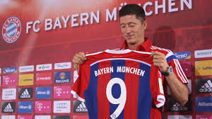

Kulisy transferów
Kariera
Borussia Dortmund
Bayern Monachium
Kariera Reprezentacyjna
Styl gry
Statystyki
Sukcesy
Rekordy
Lewandowski a złota piłka
Kulisy transferów
Biznes
Konflikt z Cezarym Kucharskim
Działaność społeczna
Sponsorzy i marketing
Pozostała działalność
Życie prywatne
Uhonorowanie
Ciekawostki
W 2008 jako piłkarz Znicza Pruszków otrzymał oferty z innych polskich klubów, m.in. z Lecha Poznań, Wisły Kraków, Legii Warszawa, Cracovii i Jagiellonii Białystok, co oficjalnie potwierdził w 2016 roku prezes białostockiego klubu, Cezary Kulesza. Napastnik ze względu na chęć występów w europejskich pucharach rozważał transfer do Wisły, Lecha i Legii, co do której był jednak zniechęcony po sytuacji z 2006 roku, kiedy to nie zdecydowano się na dalszą współpracę z nim. Ostatecznie najbardziej zdeterminowany do pozyskania perspektywicznego napastnika okazał się Lech. Były trener poznańskiej drużyny, Franciszek Smuda przyznał, że podczas sezonu 2009/2010, niemal na każdym meczu Lewandowskiego obecni byli wysłannicy Borussii Dortmund, a kilkukrotnie na meczach poznańskiej drużyny pojawił sam trener Jürgen Klopp. W 2020 Stefano Capozucca były dyrektor sportowy Genoi zdradzi, że w 2010 jego klub był o krok pozyskania Lewandowskiego, a od transferu Polaka dzieliły tylko testy medyczne. Na ostatnim etapie transakcji nie zatwierdził jednak prezydent włoskiego klubu, Encrico Preziosi. W 2018 po transferze do tego klubu innego polskiego napastnika, Krzysztofa Piątka pojawiła się informacja o tym, że w archiwum włoskiego klubu ciągle miał znajdować się przygotowany dla Lewandowskiego kontrakt, który traktowany był przez działaczy klubu jako ostrzeżenie przed popełnieniem kolejnych transferowych błędów i zachętę do podejmowania ryzyka. Oprócz wymienionych klubów, zainteresowane transferem Polaka były m.in. niemieckie TSG 1899 Hoffenheim oraz kluby ze Wschodu, Zenit Petersburg i Szachtar Donieck, który oferował za transfer polskiego napastnika 8 milionów euro, natomiast Lewandowski i jego menedżer rozwali jedynie transfer do zachodniej ligi. Lewandowski rozmawiał także z Blackburn Rovers, natomiast kolejny etap negocjacji jakim miała być wizyta Polaka w angielskim klubie, uniemożliwiła erupcja wulkanu Eyjafjallajökull, która zatrzymała połączenia lotnicze. 
Ze względu na rosnącą pozycję w światowym futbolu, podczas występów w Borussii Dortmund Lewandowski zaczął wzbudzać zainteresowanie największych klubów świata. Po strzeleniu przez Polaka czterech bramek w półfinałowym spotkaniu Ligi Mistrzów z Realem Madryt media informowały, że interesują się nim właśnie Królewscy. W 2020 potwierdzono medialne doniesienia mówiące o tym, że siedem lat wcześniej Lewandowski otrzymał ofertę podpisania kontraktu z Realem Madryt. Portal Onet dotarł do przygotowanego dla Polaka kontraktu, który miał opiewać na kwotę ok. 75,5 miliona euro. Dokument formalizujący szczegóły przenosin Polaka na Santiago Bernabéu został sporządzony w grudniu 2013 roku, natomiast podpisami firmowali go José Angel Sánchez, ówczesny dyrektor generalny, jeden z najbliższych współpracowników prezydenta klubu Florentino Péreza oraz Manuel Redondo Sierra, szef gabinetu prezydenta. Jak wynika z ujawnionych informacji, kontrakt Lewandowskiego miał obowiązywać do 30 czerwca 2020. Piłkarz za podpisanie umowy miał otrzymać premię w wysokości 10,9 mln euro brutto, za każdy sezon inkasowałby 8,6 mln euro, natomiast za każdy rok spędzony w Madrycie – kolejne 1,5 mln euro brutto. Onet ustalił, że klauzula wykupu Polaka miała opiewać na 150 milionów euro. Transakcja nie doszła do skutku, gdyż w chwili złożenia propozycji piłkarz był związany umową ustną z władzami Bayernu Monachium, a w styczniu 2014 podpisał już niezbędne dokumenty dotyczące transferu do drużyny ze stolicy Bawarii. Ówczesny menedżer Lewandowskiego, Cezary Kucharski, pytany o kwestię transferu powiedział:
Chciał iść do Realu i wycofać się z umowy z Bayernem. Spodobała mu się wizja mieszkania i gry w Madrycie. Nasłuchałem się wtedy od władz klubu z Monachium, dyrektor Matthias Sammer dzwonił wściekły.
Cezary Kucharski
W 2014, po potwierdzeniu transferu do Bayernu, francuski trener Arsène Wenger przyznał, że był zainteresowany sprowadzeniem polskiego napastnika do Arsenalu.
Mimo przenosin Lewandowskiego do Bayernu, temat transferu do Madrytu nie upadł i jeszcze podczas kilku następnych okien transferowych pojawiał się na okładkach czołowych sportowych gazet. W 2015 hiszpański „AS” umieścił na okładce zdjęcia Lewandowskiego oraz Kucharskiego opatrzone podpisem „Operacion Lewandowski” (pol. Operacja Lewandowski), informując o rozmowach, jakie Kucharski miał odbywać z Realem w związku z ewentualnym transferem polskiego napastnika.  W 2016, w okresie kiedy chińskie kluby kusiły światowe gwiazdy gigantycznymi zarobkami (na ruch tego typu zdecydowali się m.in. Carlos Tévez, Ezequiel Lavezzi czy Oscar), media poinformowały, że również Lewandowski otrzymał ofertę od jednego z klubów z Bliskiego Wschodu, której jednak nie przyjął.
W 2020 (w wywiadzie dla katalońskiego „Sportu”) Lewandowski przyznał, że 18 kwietnia 2017, po rewanżowym spotkaniu ćwierćfinału Ligi Mistrzów pomiędzy Realem Madryt a Bayernem Monachium, Cristiano Ronaldo i Sergio Ramos przekonywali go do transferu do stolicy Hiszpani.
Ostatnie poważne doniesienia o możliwości transferu Lewandowskiego do Realu pojawiły się w 2018 roku – przy okazji zmiany przez niego menedżera, którym został izraelski agent Pini Zahavi. Wśród klubów zainteresowanych Polakiem wymieniano wówczas również m.in. drużyny angielskie, Chelsea i Manchester United, a także Juventus oraz Paris Saint-Germain. Spekulacje medialne podsycały wypowiedzi ekspertów w Niemczech, a także incydent, kiedy to zmieniony w jednym z ligowych meczów Lewandowski nie podał ręki trenerowi Juppowi Heynckesowi. Polak w wywiadzie z 2019 roku potwierdził, że w sezonie 2018/19 rzeczywiście rozważał zmianę barw klubowych i był to dla niego dość trudny czas. W wywiadzie dla Onetu powiedział:
Nie był to łatwy czas. Otwarcie powiedziałem, że chcę odejść i niektórzy poczuli się z tym mało komfortowo. Widzieliśmy na moim przykładzie, jak można atakować piłkarza np. poprzez media. Wiedziałem, że coś takiego się wydarzy. Co innego jednak wiedzieć, a co innego faktycznie znaleźć się w takiej sytuacji. Pewne osoby wykorzystały moment i zaczęły mnie atakować. Nawet w Polsce zdarzało się, że niektórzy naginali rzeczywistość, ale nie będę mówił o szczegółach. Ta sytuacja pokazała mi, jak to wszystko funkcjonuje. Zyskałem sporą wiedzę, przetrwałem trudny okres i urosłem jako człowiek. Choć początkowo zamieszaniu wokół transferu towarzyszyły złe emocje, z perspektywy czasu sądzę, że miało to więcej plusów niż minusów. Wszyscy wyciągnęliśmy z tego naukę i wnioski.
Spekulacje transferowe i gorącą medialną atmosferę zakończyło podpisanie przez Lewandowskiego nowego kontraktu z Bayernem, obowiązującego do 30 czerwca 2023.
W 2020 w wywiadzie dla France Football, Lewandowski ujawnił, że w 2012 był bliski transferu do Manchesteru United i odbył rozmowę z ówczesnym trenerem tej drużyny, sir Alexem Fergusonem, który chciał sprowadzić go na Old Trafford. Polak przyznał, że był gotowy na transfer, natomiast Borussia Dortmund, nie zdecydowała się na jego sprzedaż. W sierpniu 2020 holenderski trener piłkarski Louis van Gaal, zdradził, że w 2014, po objęciu Manchesteru United, również chciał sprowadzić go do swojej drużyny.
W 2016, w okresie kiedy chińskie kluby kusiły światowe gwiazdy gigantycznymi zarobkami (na ruch tego typu zdecydowali się m.in. Carlos Tévez, Ezequiel Lavezzi czy Oscar), media poinformowały, że również Lewandowski otrzymał ofertę od jednego z klubów z Bliskiego Wschodu, której jednak nie przyjął.
W 2020 (w wywiadzie dla katalońskiego „Sportu”) Lewandowski przyznał, że 18 kwietnia 2017, po rewanżowym spotkaniu ćwierćfinału Ligi Mistrzów pomiędzy Realem Madryt a Bayernem Monachium, Cristiano Ronaldo i Sergio Ramos przekonywali go do transferu do stolicy Hiszpani.
Ostatnie poważne doniesienia o możliwości transferu Lewandowskiego do Realu pojawiły się w 2018 roku – przy okazji zmiany przez niego menedżera, którym został izraelski agent Pini Zahavi. Wśród klubów zainteresowanych Polakiem wymieniano wówczas również m.in. drużyny angielskie, Chelsea i Manchester United, a także Juventus oraz Paris Saint-Germain. Spekulacje medialne podsycały wypowiedzi ekspertów w Niemczech, a także incydent, kiedy to zmieniony w jednym z ligowych meczów Lewandowski nie podał ręki trenerowi Juppowi Heynckesowi. Polak w wywiadzie z 2019 roku potwierdził, że w sezonie 2018/19 rzeczywiście rozważał zmianę barw klubowych i był to dla niego dość trudny czas. W wywiadzie dla Onetu powiedział:
Nie był to łatwy czas. Otwarcie powiedziałem, że chcę odejść i niektórzy poczuli się z tym mało komfortowo. Widzieliśmy na moim przykładzie, jak można atakować piłkarza np. poprzez media. Wiedziałem, że coś takiego się wydarzy. Co innego jednak wiedzieć, a co innego faktycznie znaleźć się w takiej sytuacji. Pewne osoby wykorzystały moment i zaczęły mnie atakować. Nawet w Polsce zdarzało się, że niektórzy naginali rzeczywistość, ale nie będę mówił o szczegółach. Ta sytuacja pokazała mi, jak to wszystko funkcjonuje. Zyskałem sporą wiedzę, przetrwałem trudny okres i urosłem jako człowiek. Choć początkowo zamieszaniu wokół transferu towarzyszyły złe emocje, z perspektywy czasu sądzę, że miało to więcej plusów niż minusów. Wszyscy wyciągnęliśmy z tego naukę i wnioski.
Spekulacje transferowe i gorącą medialną atmosferę zakończyło podpisanie przez Lewandowskiego nowego kontraktu z Bayernem, obowiązującego do 30 czerwca 2023.
W 2020 w wywiadzie dla France Football, Lewandowski ujawnił, że w 2012 był bliski transferu do Manchesteru United i odbył rozmowę z ówczesnym trenerem tej drużyny, sir Alexem Fergusonem, który chciał sprowadzić go na Old Trafford. Polak przyznał, że był gotowy na transfer, natomiast Borussia Dortmund, nie zdecydowała się na jego sprzedaż. W sierpniu 2020 holenderski trener piłkarski Louis van Gaal, zdradził, że w 2014, po objęciu Manchesteru United, również chciał sprowadzić go do swojej drużyny.